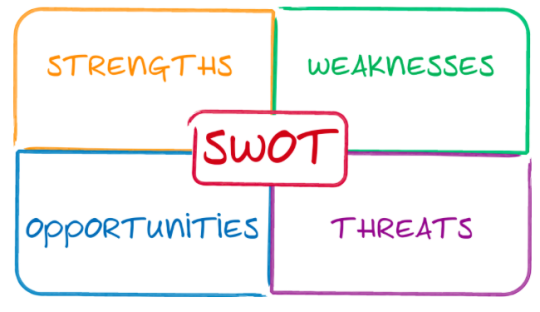
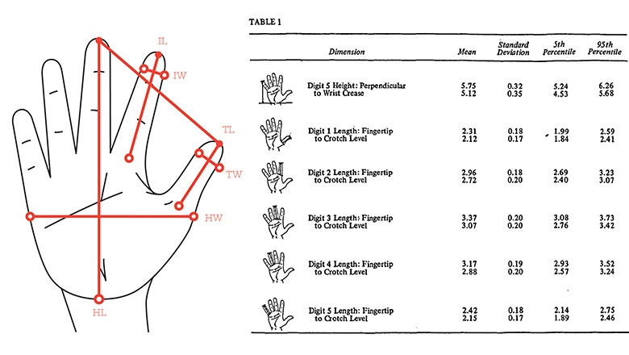

1 - Identifying Requirements
Table of Contents
1 Exploring Contexts
1.1 What can be learnt by exploring contexts that design solutions are intended for? a. Understand that all design practice is context dependent and that investigations are required to identify what makes a context distinct in relation to: i. environment and surroundings ii. user requirements iii. economic and market considerations iv. product opportunities.
Environment and surroundings
1.1a.i. Environment and surroundings Products are designed for use in different environments.
- A robot that welds car body panels together will be used exclusively in a factory.
- A photocopier might be designed for use in a School or office.
- A plug-in air freshener would be typically used in the home.
When engineers and designers work to create new items, the context for where it is to be used will heavily influence the form of the finished product. A product that is to be used in an industrial environment (like a labelling machine) will be designed solely to perform the task it exists to do, in a safe way. If it has a human operator, any interface (e.g. display, buttons, etc) are large, clear and is intuitive to use as far as possible. Durability will heavily influence the design, as the product may be mission-critical and could cause production to slow or halt in the event of its failure. Industrial products will likely be engineered to make replacing defective parts as convenient as possible (e.g. through the addition of removable access panels).
A product for an office must be designed to both serve its purpose, but to also give a look and feel in keeping with a professional environment. A common colour scheme is grey and silver, objects often have an ‘industrial’ look and ergonomics should be carefully considered to ensure that products are comfortable to use for extended periods. Microsoft produce an ergonomic keyboard, for example.
Products designed for a home environment will commonly be more heavily influenced by the cosmetic finish of the product. For luxury goods, the materials used to finish the product will be of a higher quality, and may include varnished wood and premium plastics (like those seen in coffee machines). As young children are often present in home settings, safety considerations must include making sure that small fingers can’t make their way into areas that cause harm (e.g. think about how plug sockets are designed).
For all products, safety must be the prime consideration, ensuring that there are no sharp edges, exposed wires or moving parts that could trap a body-part and cause injury.
User Requirements
When a client approaches an engineering team to solve a problem, they will have a list of specific requirements which will need to be satisfied. This list is developed with the engineering team and is called a Design Specification. This may cover areas such as: Aesthetics, size, weight, materials, cost, durability, functionality (i.e. what it actually does), performance (how fast/accurately it does it) and power (e.g. batteries, solar, generator and mains AC). Once the product prototype has been built, the engineering team can test the product against the specification to demonstrate that they have designed a product or system which does exactly what the client asked for.
Economic and Market Considerations
- All clients have a budget. At the outset of a new project, they will advise on what their development budget (how much they want to spend on manpower + prototypes to develop a mass-producible product) is, and will indicate the budget for building the actual new product (e.g. Should cost no more than £3 to manufacture per unit).
- The market that the product is to be aimed at will influence this heavily; a water purification unit for refugees in a third-world country would need to be built as cheaply as possible (to maximise the number of people who can have one), while ensuring that the product works consistently and safely. Any unnecessary flourishes (e.g. branding, nice-to-have features like an LED indicator) would need to be stripped away to the bare minimum amount of hardware to produce the desired result.
- The market for a new top-spec iPhone would be very different, and to ensure that the client feels they’re receiving value for money, the quality of the product would need to be of the highest standard available in order to justify the price tag that such an item could be expected to command.
Product Opportunities
- Events happen around the World daily. These can often represent opportunities for entrepreneurs. Some are short-term (e.g. fidget spinners becoming cool) and others may be longer-term (e.g. combating global warming), necessitating new products to solve new problems. By looking for trends and following global events, designers and engineers can identify new, unsolved problems and create successful products to tackle them.
2 Stakeholders Analysis
What can be learnt by undertaking stakeholder analysis?
1.2a Demonstrate an understanding of methods used for investigating stakeholder
requirements, such as:
• user-centred design and stakeholder analysis
• SWOT analysis
• focus groups
• qualitative observations
• market research to identify gaps for new products or opportunities to update existing products.
User Centred Stakeholder Analysis
- When a new product is to be designed and built, in order for it to be successful, the target audience must be carefully considered. The different people/groups involved in a product are called stakeholders. In a School, stakeholders include students, teachers, support staff and governors.
- For a piece of industrial manufacturing equipment like a robot that places toppings on frozen pizzas in a factory, stakeholders can include managers, machine operatives, maintenance engineers and system programmers. Each of these people will have particular wants in terms of what the machine might do.
- The manager will likely want the robot to keep track of how many pizzas it tops each day, how much product falls off the pizza onto the floor (waste), how often it breaks down (costing the company money).
- The maintenance engineers will want to ensure that all the main parts can be removed in as short a time as possible, that they’re easy to reach and that the reliability of the machine is such that it seldom breaks down.
- The operative (where one is required) will want a machine which requires minimal human input to work, is comfortable to use, reduces the amount of repeated body movement to operate and is safe to use.
- Practice task: Make a stakeholder list for a new vacuum cleaner and suggest some stakeholder priorities that they might raise.
A SWOT Analysis
 A SWOT analysis (Strengths, Weaknesses, Opportunities and Threats) is a process developed in the 60’s by which as many considerations as possible are recorded under each of the SWOT headings. For a new smartphone, one might identify:
- Strength: The new design is ultra light-weight.
- Weakness: The software is the same as available on every other Android phone
- Opportunities: Has a unique new chip that can be marketed to unlock users doors at homes
- Threats: There are many other phone manufacturers who could release this feature first.
You can read a little more about it here.
Focus Groups
- Focus groups are meetings in which the engineering team meet with different stakeholders to discuss the new product. They may produce a SWOT analysis collaboratively as part of this.
Qualitative Observation
- Qualitative observation is the process of design engineers watching a pre-existing system operating in a live environment (e.g. a factory in which frozen pizzas are manually topped). By watching the process, engineers can fully understand the steps in the existing system and consider different solutions to improve the current system.
Market Research
- Market research is the process of looking online (or through product catalogues) at other ways in which the problem can be solved using products designed by other companies. Unless it can be made more cheaply, there is little point in releasing a product which another supplier is already selling. Equally, if an existing product has reviews stating that it lacks a particular feature, the opportunity to release a rival product to compete with it might arise.
3 Developing New Product Ideas
1.2b. Demonstrate an understanding of how enterprise can help drive the development of new product ideas through routes to innovation such as:
• entrepreneurship
• commercial partnerships
• venture capitalists and crowd funding websites.
Entrepreneurship
- In order to develop, release and market a new product, substantial initial financial capital will be required. One might fund these through a number of different routes:
- An entrepreneur who has a high level of self-belief in her product might elect to borrow their start-up capital from a bank in the form of a large loan. As the bank will be taking a considerable risk (i.e. if your product doesn’t take off, they’ll lose their money), they would typically expect that you would demonstrate your commitment by sharing the risk. This usually comes by you putting up your own money (if you have enough) or your home against the loan, so that if your business fails, your house can be sold to allow the bank to recover their money. The advantage of this approach is that if you are able to launch a new product, you’ll be able to enjoy all the profits after you’ve paid back your debt. The disadvantage of this is that should your idea not be a success, you risk losing your home and any other assets you may have.
Commercial Partnerships
- Some engineers might seek funding through startup-incubators (similar to the TV show, Dragons’ Den). By ‘pitching’ your idea and presenting your business plan to a panel of experienced investors, you may be able to negotiate to obtain the funding you need in exchange for a (often considerable) percentage of your profits if/when your product takes off. Incubators are often able to supply experienced business people to offer advice as well as providing office space for start-ups.
- Read more: https://en.wikipedia.org/wiki/Business_incubator
- Venture Capitalists (VCs) are similar to a start-up incubator.
- https://en.wikipedia.org/wiki/Venture_capital
- A 21st century approach to raising capital is through the use of crowd-funding, made popular through sites such as www.Kickstarter.com. Crowd funding works by the engineer creating a web page outlining the details of the product they intend to design and create, and allowing prospective
Venture Capatalists and Crowd Funding Websites
- investors to pay for different ‘rewards’, typically at considerably lower prices than the retail price of the product once launched to the general public. If the designer is able to reach a certain level of funding, the website transfers them the money pledged by the individual investors and they are then able to create and launch their product. If they don’t reach the intended funding level, the investors’ money is returned. This has the advantage of not requiring any up-front investment by the engineer and doesn’t expose the investor to as much risk. The disadvantage is that one may not reach their funding target, and that the inventor may not actually be able to deliver the product they’ve promised with the funding they raise if their calculations are incorrect.
4 Designing Prototypes
How can usability be considered when designing prototypes?
1.3a Learners should be able to analyse and evaluate factors that may need consideration in relation to the user interaction of a design solution, including:
i. the impact of a solution on a user’s lifestyle
ii. the ease of use and inclusivity of products
iii. ergonomic considerations and anthropometric data to support ease of use
iv. aesthetic considerations.
Usability is the extent to which something is fit for purpose. By producing a new version of a kitchen knife which has a more comfortable grip, users would be able to use it to prepare food for longer before their hands tire. This can be considered from a number of stand-points.
1.3ai Users lifestyles
An obvious objective of a product designed for a homeowner should be to provide a positive impact. This may be:
- To reduce the time spent on a domestic task to increase leisure time. The invention of washing machines freed up time that would be spent hand-washing.
- To provide a financial saving. An LED lightbulb will save money spent on electricity.
- To reduce the effort required to achieve a desired outcome. Remote controls for applicances like TVs remove the need to walk over to the set in order to change channel.
- To enable a disabled user to function more independently. Speaking clocks allow blind or partially sighted users to tell the time.
- To improve the environment of the home. Scented candles look attractive, and when lit release a pleasing fragrance.
- To improve security. High-spec burglar alarms call homeowners when they are triggered, notifying them of a problem.
1.3aii Ease of use and inclusivity
Ease of use refers to how straightforward a product is for a user to learn to operate. Industry professionals often cite that aside from its cosmetic appearance, the Apple iPhone has been a runaway success largely because of how intuitive it is to use. Some systems (e.g. specialised industrial equipment) may be more complex by necessity, but the use of labels on control buttons, information engraved into panels and good-quality documentation, the ease of use can be increased.
Inclusivity is about designing a product in such a way that people of all shapes, sizes and those with disabilities are able to use the product. Using the iPhone again as an example, Apple have invested extensively in providing a user interface that speaks to users as they run their fingers around the screen. As a result, blind users can make calls, send messages and take advantage of many features through these adaptations. In many new homes, light-switches are installed lower down, allowing a wheelchair user to reach them. High-rise buildings have lifts installed, so that people with reduced mobility can access the upper floors.
1.3aiiiErgonomics and Anthropmetrics
Ergonomics is the study of people’s efficiency in their working environment. Many products are marketed as being ‘ergonomically designed’. An ergonomic computer mouse will more naturally fit around a human hand; an ergonomic chair will have support for the lower back, and lots of options to adjust the height/tilt of different parts to make it more comfortable to sit in for extended periods.
To design a product with ergonomics in mind, anthropometric data is used. This comes in the form of tables that can show figures on ‘typical’ human characteristics, like the height of US men over 20 year old. Data can also be obtained on grip strength in people’s hands, the mean average length of different body parts, range of movement of a head, etc. This can be useful for all manner of things, such as establishing how tightly a Coke bottle’s screw-top lid can be done up to minimize the loss of CO2 while ensuring that most children can open them without assistance.
1.3aiv Aesthetic Considerations
This was touched on previously, but for a domestic or office product, if the item is physically attractive and stylistically in-keeping with current trends, a premium price can be charged. A good example of this is an electric kettle; these consist of a heating element, a temperature sensor and a switch. While incremental improvements have appeared such as better heating elements, the circuit inside is largely unchanged since the original 1891 design. Nonetheless, consumers have the ability to spend £6 on a kettle, or over £200. Both achieve the same outcome and share the same fundamental parts, but they look cosmetically different. It is worth remembering that while the profit margin is considerably greater for a ‘designer’ kettle, far fewer are sold. It is entirely possible that the manufacturer selling vastly greater number of their product for a lower profit would actually operate a more profitable overall business – this principal can be seen when comparing supermarkets like Aldi and Waitrose.
1.3bi Anthropometric data to help define design parameters
Anthropometric Data Explained. Of course not all people are the same size. There will be huge differences between the heights, weights, and other dimensions due to: gender, age, diet, growth rate, genetic make up and other factors. Therefore the Anthropometric data needs to be organised in a specific way.
Anthropometric data to help the design parameters associated with the human body.

- The table above could be used when designing a grip for a power tool, or when designing a keyboard.
- It is important to know the dimensions of a hand.
1.3bii User comfort, control layout and software user-interface
The user experience is the core of the design process.
Designers should put themselves in the shoe of the end consumer in order to achieve empathic design.
In order to achieve success in the highly competitive market, the innovation should walk side by side with the deep understanding of the consumer interaction with both the physical and digital aspects of the products.
This understanding should be achieved through the understanding of the user ergonomics and apply the principles of ergonomics in the design process.
Ergonomics refer to designing products, services, systems and processes with social interaction in mind.
The principles of ergonomics ensures that the design complement the consumer ability strengths for and strives to minimize the effort and limitations while using the product rather than forcing them to adapt.
Ergonomics is widely implemented in different industries effecting the creative sector. Many designers believe ergonomics is only considered in product design. However, designers in different fields such as graphic and interactive design are required to consider ergonomics in their design projects. For example, the interactive designers should consider the user experience research as an essential stage in designing mobile applications, websites, and user interfaces.
Principles of Ergonomics - In order to consider the ergonomics involved in different design projects, universal principles of ergonomics can be applied. While the principles below may not be applicable in some projects, the concepts can be adapted to both physical and digital projects.
- 1. Neutral postures - The neutral posture refers to the human body aligned and balanced. The standard and balanced posture reduces the stress applied on muscles, tendons, nerves, and bones. The unbalanced posture for the human body is known as an “awkward posture”.
- 2. Reduce Excessive force - The design for heavy products should consider reducing the excessive force needed or used to pull, push, or carry the product. Alternative solutions should be adapted to reduce the use of force such as using wheels to these products.
- 3. Keep Things Easy to Reach - This principle is widely applied in both the physical and digital domains. The interaction with a specific product should be made easy. Consumers should reach the product easily and interact with it. For example, the control panel for dish washers should be reachable with the minimum amount of effort and time. In digital designs such as website and mobile application, users should be able to reach functions and navigation links easily through the usable implementation of the layout.
- 4. Work in Power or Comfort Zone - The power zone refers to the zone where interacting with objects has the least amount of effort spent, it is also known as “hand shake zone”. It is the area between mi-thigh and mid-chest height. If the product is designed to be held, the designer should consider this position as the standard.
- 5. Reduce Excessive motion - This principle aims to reduce the amount of motion spent while dealing with the design. The motion refers to any movement applied using the figures, wrist, or other parts of the body. One of the examples of applying this principle is the usage of screwdriver. The electric screwdriver is designed to reduce hand motion during usage.
- 6. Reduce Static Load - Static load refers to the position where the person stays in the same position or holds something for a long time. This load create discomfort fatigue. If the product requires the consumer to stand still for a long time such as holding a specific tool, a fixture solution needs to be applied in order to eliminate the need to hold the object.
- 7. Minimise Pressure Points - The pressure point refers to the point where the object is in contact with the consumer body during the usage of the product. For example, high chairs makes a pressure point between the user legs and table or desk. Therefore, designing the chair should allow users to modify the height and subsequently it can be used with any table height.
- 8. Provide Clearance - The design for products and interior should provide a space for the user to move freely and avoid dumping into any of the objects. The same concept is applied in the digital domain. Placing the functions and elements in the website design or mobile application device should allow the user to move between the function smoothly and avoid any confusion such as clicking on wrong buttons.
- 9. Enable Movement and Stretching - The product design should consider the user needs to move, exercise, and stretch. For example, seat design includes options to adjust the setting style. Tables that forces one to stand up or be in in one place may be modified in some places to avoid the a long setting time.
- 10. Reduce Excessive Vibration - Vibration has a serious impact on consumer health. Contacting vibrating tools may cause hand-arm vibration syndrome (HAVS). Therefore, designing products that use motors or vibrate while holding should consider this principle. For example, the motor part can be separated from the tool itself and connected to it using a cord instead. This reduces the vibration on the tool.
- 11. Provide Good Lighting Conditions - The overall work environment should be comfortable and allow users or designers to have good lighting, fresh air, and enough space. In offices where computer screens are installed, the design of the light systems should avoid reflections caused by the polished computer screens.
5 Practice questions
Recap
- Apart from the bridge crew (i.e. Captain and first officer), name two different stakeholder groups that might be identified when designing a new cruise ship.
- The design team are drafting specification points for different stakeholders. One point the bridge crew have identified is that it must be possible to reliably communicate with the different teams on the ship at all times. For each of the two stakeholder groups you identified above, describe one specification point they might suggest when designing the new ship.
- Describe the term, ‘focus group’.
- Mary has recently finished her A-levels and has designed a mobile phone charger with an integrated radio and flashlight. She wants to release it as a commercial product, but has never launched a product. Suggest a funding mechanism she could use, and justify your choice.
- A stationary company wants to create a pencil dispenser that can be put into school classrooms to allow students who have forgotten their pencil to take a replacement.
- The company want to set up a focus group. Identify a stakeholder group that might be invited.
- Suggest 3 user requirements that might be proposed in an initial meeting with the client, and justify your answers.